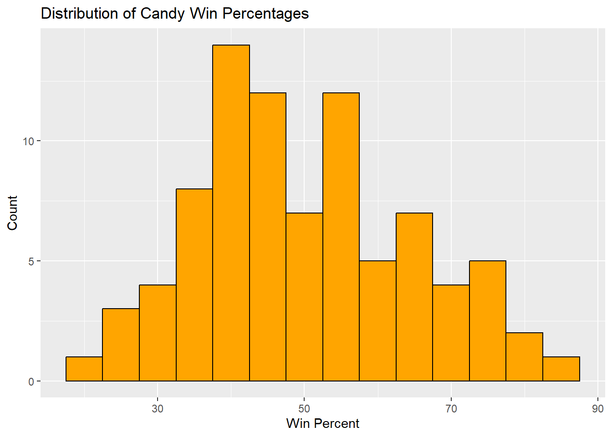
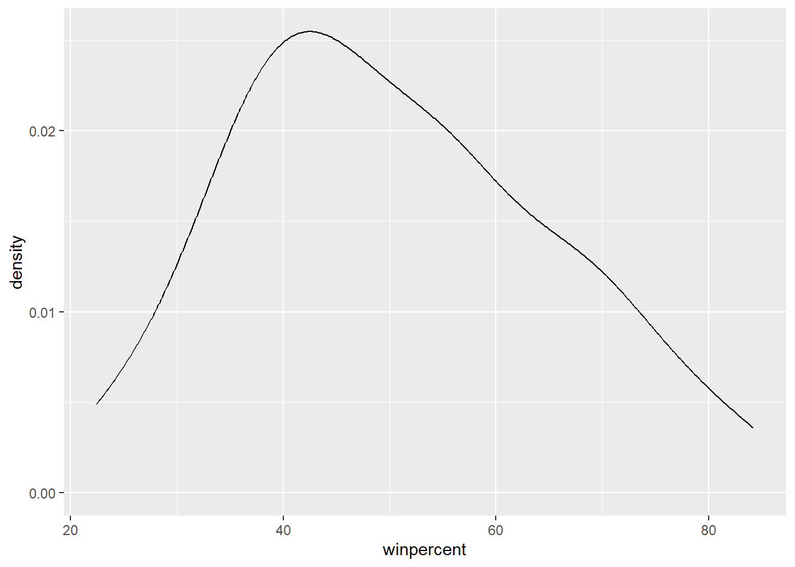
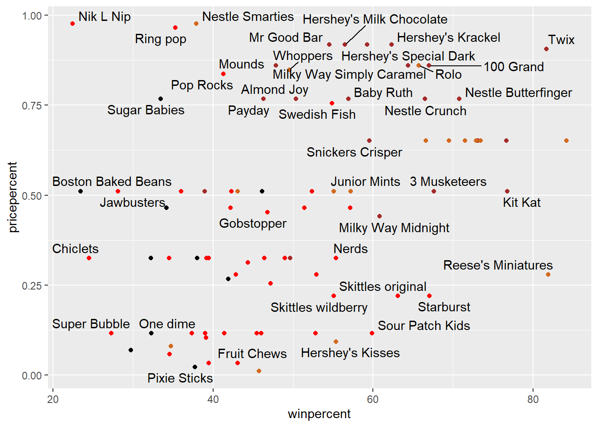
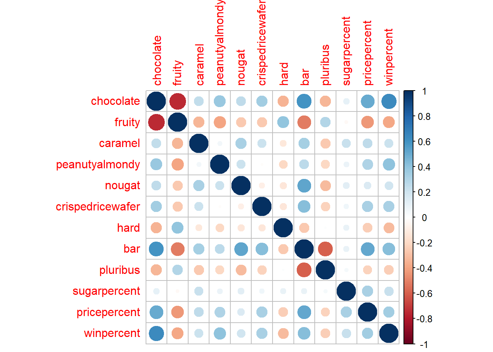

Q5. What is the winpercent value for “Tootsie Roll Snack Bars”?
candy["Tootsie Roll Snack Bars", ]$winpercent
[1] 49.6535
The winpercet is 49.6535
Quick overview of the dataset
skimr::skim(candy)
Data summary
Name
candy
Number of rows
85
Number of columns
12
_______________________
Column type frequency:
numeric
12
________________________
Group variables
None
Variable type: numeric
skim_variable
n_missing
complete_rate
mean
sd
p0
p25
p50
p75
p100
hist
chocolate
0
1
0.44
0.50
0.00
0.00
0.00
1.00
1.00
▇▁▁▁▆
fruity
0
1
0.45
0.50
0.00
0.00
0.00
1.00
1.00
▇▁▁▁▆
caramel
0
1
0.16
0.37
0.00
0.00
0.00
0.00
1.00
▇▁▁▁▂
peanutyalmondy
0
1
0.16
0.37
0.00
0.00
0.00
0.00
1.00
▇▁▁▁▂
nougat
0
1
0.08
0.28
0.00
0.00
0.00
0.00
1.00
▇▁▁▁▁
crispedricewafer
0
1
0.08
0.28
0.00
0.00
0.00
0.00
1.00
▇▁▁▁▁
hard
0
1
0.18
0.38
0.00
0.00
0.00
0.00
1.00
▇▁▁▁▂
bar
0
1
0.25
0.43
0.00
0.00
0.00
0.00
1.00
▇▁▁▁▂
pluribus
0
1
0.52
0.50
0.00
0.00
1.00
1.00
1.00
▇▁▁▁▇
sugarpercent
0
1
0.48
0.28
0.01
0.22
0.47
0.73
0.99
▇▇▇▇▆
pricepercent
0
1
0.47
0.29
0.01
0.26
0.47
0.65
0.98
▇▇▇▇▆
winpercent
0
1
50.32
14.71
22.45
39.14
47.83
59.86
84.18
▃▇▆▅▂
Q6.Is there any variable/column that looks to be on a different scale to the majority of the other columns in the dataset?
The winpercent is on a 0-100 scale the rest are 0-1 scale
Q7. What do you think a zero and one represent for the candy$chocolate column?
That the candy does not contain chocolate
Q8. Plot a histogram of winpercent values
library(ggplot2)ggplot(candy, aes(x = winpercent)) +geom_histogram(binwidth =5, fill ="orange", color ="black") +labs(title ="Distribution of Candy Win Percentages",x ="Win Percent",y ="Count")

Q9. Is the distribution of winpercent values symmetrical?
ggplot(candy)+aes(winpercent) +geom_density()

No the distribuition is not symmetrical.
Q10. Is the center of the distribution above or below 50%?
mean(candy$winpercent)
[1] 50.31676
summary(candy$winpercent)
Min. 1st Qu. Median Mean 3rd Qu. Max.
22.45 39.14 47.83 50.32 59.86 84.18
Q11. On average is chocolate candy higher or lower ranked than fruit candy?
# 1. Find all chocolate candy in the dataset# 2. Find their winpercent values# 3. Calculate the mean of these values# 4-6. Do the same for fruity candy# 7. Compare mean winpercents of chocolate vs fruity# 8. Pick the highest as the winnermean(candy[candy$chocolate==1,]$winpercent)
Q12. Is this difference statistically significant?
t.test(choc.win, fruit.win)
Welch Two Sample t-test
data: choc.win and fruit.win
t = 6.2582, df = 68.882, p-value = 2.871e-08
alternative hypothesis: true difference in means is not equal to 0
95 percent confidence interval:
11.44563 22.15795
sample estimates:
mean of x mean of y
60.92153 44.11974
Overall Candy Rankings
Q13. What are the five least liked candy types in this set?
candy |>arrange(winpercent) |>head(5)
chocolate fruity caramel peanutyalmondy nougat
Nik L Nip 0 1 0 0 0
Boston Baked Beans 0 0 0 1 0
Chiclets 0 1 0 0 0
Super Bubble 0 1 0 0 0
Jawbusters 0 1 0 0 0
crispedricewafer hard bar pluribus sugarpercent pricepercent
Nik L Nip 0 0 0 1 0.197 0.976
Boston Baked Beans 0 0 0 1 0.313 0.511
Chiclets 0 0 0 1 0.046 0.325
Super Bubble 0 0 0 0 0.162 0.116
Jawbusters 0 1 0 1 0.093 0.511
winpercent
Nik L Nip 22.44534
Boston Baked Beans 23.41782
Chiclets 24.52499
Super Bubble 27.30386
Jawbusters 28.12744
Warning: ggrepel: 44 unlabeled data points (too many overlaps). Consider
increasing max.overlaps

Exploring the correlation structure
Now that we’ve explored the dataset a little, we’ll see how the variables interact with one another. We’ll use correlation and view the results with the corrplot package to plot a correlation matrix.
library(corrplot)
corrplot 0.95 loaded
cij <-cor(candy)corrplot(cij)

Principal Component Analysis
The function to use is called prcomp() with an optinoal scale=T/F argument.